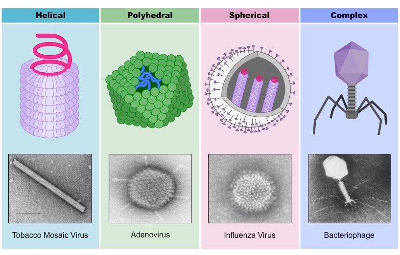

Aqui Falaremos Sobre Retro-Vírus Endógenos
Mas primeiramente, o que são vírus?
Os vírus são microrganismos muito pequenos que não possuem células e não conseguem se reproduzir sozinhos. Por isso, eles são considerados parasitas intracelulares obrigatórios — ou seja, só conseguem se multiplicar dentro de células de outros seres vivos.
Um vírus é formado basicamente por material genético (DNA ou RNA), envolvido por uma cápsula de proteínas chamada capsídeo. Alguns vírus também têm um envoltório lipídico, uma camada extra formada por partes da membrana da célula hospedeira.
Apesar de serem muito simples, os vírus podem infectar todos os tipos de organismos vivos, desde bactérias até plantas, animais e seres humanos. Eles se ligam a uma célula, injetam seu material genético, e usam a “máquina” da célula para produzir novas cópias de si mesmos. Isso muitas vezes causa doenças.
Embora sejam conhecidos principalmente por causarem enfermidades, os vírus também desempenham papéis importantes na natureza e na evolução dos seres vivos, especialmente quando interagem com o DNA das células, como acontece com os retrovírus.
Vírus são seres vivos ou não?
A classificação dos vírus como seres vivos ou não é um dos temas mais debatidos na biologia. Isso porque os vírus apresentam características tanto de seres vivos quanto de entidades inanimadas, o que os coloca em uma zona “limite” entre o vivo e o não vivo.
| Argumentos a favor de que vírus são seres vivos: | Argumentos contra: |
|---|---|
| Contêm material genético (DNA ou RNA), como todos os seres vivos. | Não têm células, e a célula é considerada a unidade fundamental da vida. |
| Evoluem com o tempo, sofrendo mutações e se adaptando ao ambiente. | Não realizam metabolismo próprio, não produzem energia nem reações químicas por conta própria. |
| Alguns vírus têm estruturas complexas e estratégias sofisticadas de infecção. | Não se reproduzem sozinhos, precisam invadir uma célula viva para se multiplicar. |
| Você acredita que vírus são vivos? | |
O que são retro-vírus endógenos?
Os retrovírus endógenos são fragmentos de DNA viral que se encontram incorporados no genoma de organismos vertebrados, incluindo os seres humanos. Eles são restos de infecções antigas causadas por retrovírus, um tipo especial de vírus que insere seu material genético no DNA da célula hospedeira.
Quando essas infecções virais ocorrem nas células reprodutivas (óvulos ou espermatozoides), o DNA do vírus pode ser passado para as próximas gerações como parte permanente do genoma. Com o tempo, esses elementos virais acumulam mutações e, geralmente, perdem a capacidade de produzir vírus ativos, tornando-se "fósseis virais" no nosso DNA.
Embora muitos retrovírus endógenos estejam inativos, alguns ainda podem influenciar funções biológicas importantes, como a regulação de genes e o desenvolvimento embrionário. Além disso, seu estudo ajuda os cientistas a entender a evolução do genoma e a história das infecções virais ao longo do tempo.